İşlerimiz
Buradaki tüm kareler Instagram'da (@sekermobilya) paylaştığımız işlerden alındı; temsili görsel yok. Yazılı olanlar Reels videolarının kapağı; videoların tamamı Instagram'da.


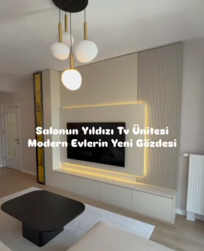


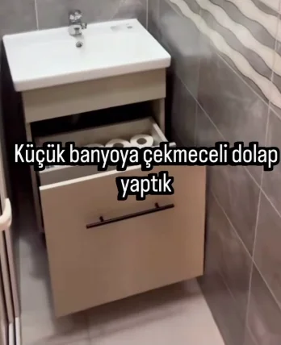
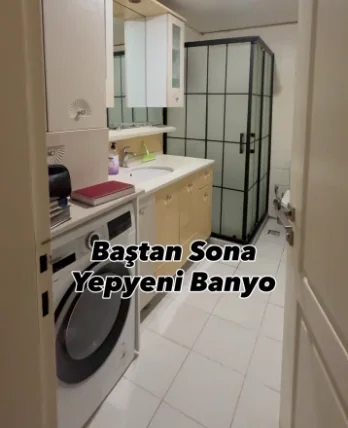
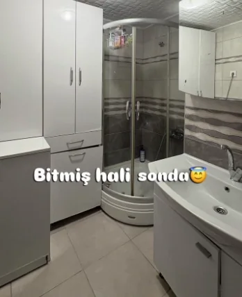
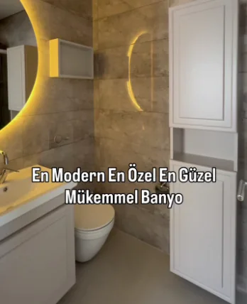
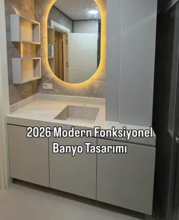
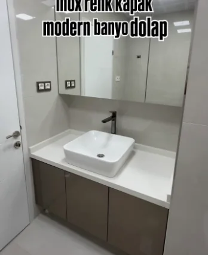


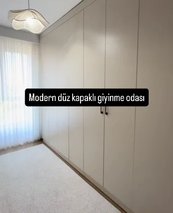
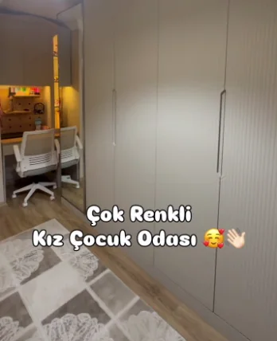
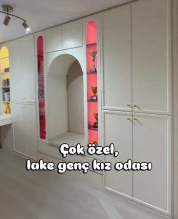
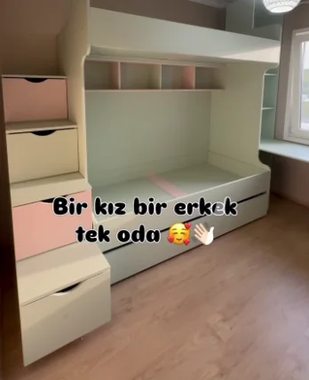
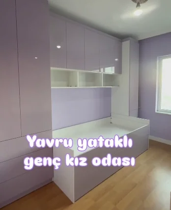


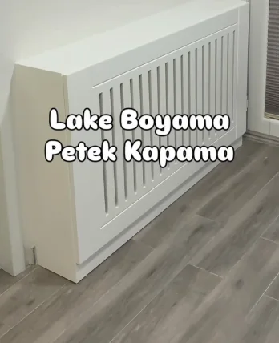
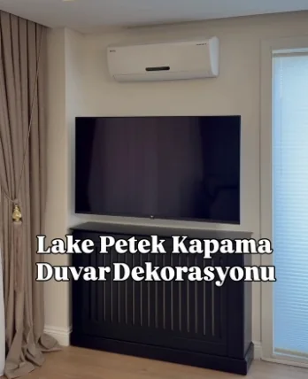
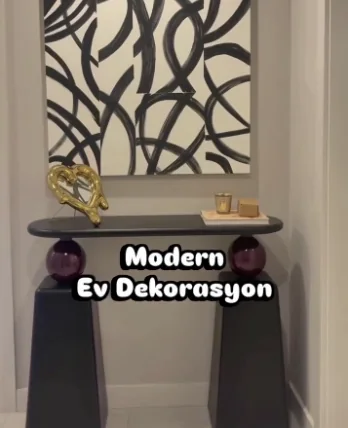
Odanın fotoğrafını gönderin
Birkaç seçimle WhatsApp mesajınızı hazırlayın; fotoğrafları WhatsApp'ta ekleyin. Bu sayfa hiçbir bilgiyi kaydetmez ya da bir yere göndermez — mesajı siz gönderirsiniz.
WhatsApp kullanmıyorsanız arayın: 0535 761 85 38
Yenibosna'dayız
Şeker MobilyaYenibosna Merkez, Ahmet Yesevi Cd. No:120, 34192 Bahçelievler/İstanbul
0535 761 85 38
Bugünkü açılış ve kapanış saatini Google Haritalar'da görebilirsiniz. Gelmeden önce aramanızı öneririz.